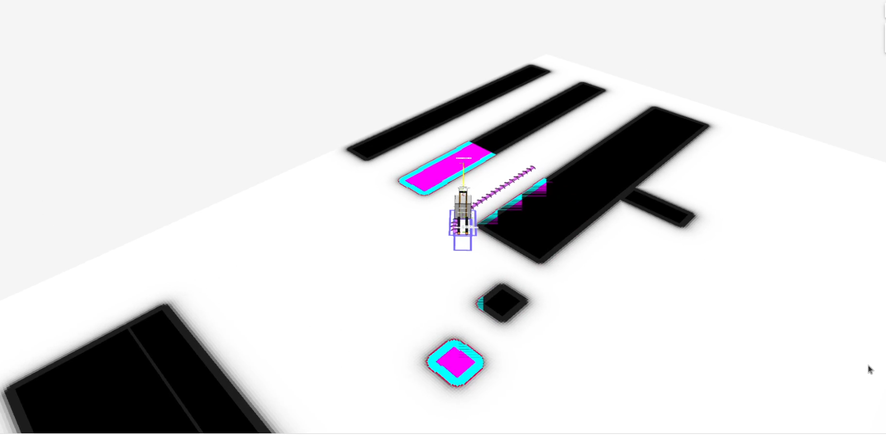

Jazzy to K-Turtle
Moving from ROS 2 Jazzy to K-Turtle, a number of stability improvements were added that we will not specifically address here.
TwistStamped Default CmdVel Change
In Kilted and newer, the default cmd_vel topic for all Twist publishers and subscriptions is changed to TwistStamped in order to enable a broader range of applications.
it also allows for rejection of stale velocity messages, which can be useful in some applications.
Your robot should now subscribe to a TwistStamped message instead of a Twist message & update your simulation appropriately.
The topic names are the same.
However, this can be disabled by setting enable_stamped_cmd_vel to false in the nav2_params.yaml file for all nodes that involve Twist subscriptions or publications.
See the configuration guide for more information on how to configure this parameter for each node.
An example simulation migration using Gazebo can be seen in the following pull request for the Turtlebot 3 and 4.
Docking with Static Infrastructure or Dynamic Docking
In PR #4627 a docking plugin type and logic was added to support non-charging dock types in the nav2 docking server.
This allows users to specify docking locations to static infrastructure, such as conveyers, or dynamic docking locations, such as a pallet.
It also includes a new docking plugin to demonstrate the new docking server capabilities simple_non_charging_dock.
New RViz panel for Docking
In PR #4458 a new RViz panel was added to interact with the Docking Server.
This panel allows the user to:
Dock the robot to a charger, selecting the dock id or the dock pose and type. It also allows the user to set whether or not to navigate to the staging pose.
Undock the robot from a charger.
The panel displays the action goal status and feedback published by nav2_msgs/DockRobot and nav2_msgs/UndockRobot actions. Users can find information such as elapsed time, number of retries and the current state of the action (staging, controlling, etc.), as well as the error codes of the action.
Here we can see the working demo of the plugin:

Attention
If the docking server is unavailable, then the combo box of the dock type will be empty.
New BT Nodes
Below is a list of new BT Nodes added:
GetPoseFromPath: An action to get a particular pose from an input path.RemoveInCollisionGoals: An action to remove waypoints that have a cost higher than a threshold.IsStopped: A condition to check if the robot is stopped for a certain duration.
New RViz Tool for Costmap Cost Cell Inspection
In PR #4546 a new RViz tool was added to get the costmap costcell’s cost and a service to get the costcell’s cost at the footprint pose.
Usage:
Click on any point in the costmap with costmap rviz tool to retrieve and display the cost value at that cell.
nav2_msgs/GetCostsservice can be used to retrieve the cost at footprint pose
Working demo of the tool:

Attention
If the costmap service is unavailable, then the tool will not be able to fetch and display the cost values.
Fix flickering visualization
In PR #4561 a map_vis_z parameter has been introduced to Costmap2DROS to help modify the map slightly below the default plane, aiming to eliminate rviz visualization flickering issues.
Default Value:
map_vis_z: 0.0
Minimum Value Without Flickering:
map_vis_z: -0.008
Before:
After:

Option to limit velocity through DWB trajectory
In PR #4663 a limit_vel_cmd_in_traj parameter was introduced to DWB local planner to allow the user to limit the velocity used in the trajectory generation based on the robot’s current velocity.
Default value:
false
Option to disable zero velocity publishing on goal exit
In PR #4675 a publish_zero_velocity parameter was introduced for the Controller server in order to disable zero velocity publishing on goal exit.
Default value:
true
Added optional collision checking for the Docking Server
In PR #4752 an optional collision checking feature was added to the Docking server to check for collisions between the robot and the dock.
Default value:
true
Revamped multirobot bringup and config files to use namespaces
In PR #4715 multirobot bringup and the use of namespaces were overhauled to be compatible out of the box with ROS namespaces and remove custom logic, specifically:
The
use_namespaceparameter has been removed fromnav2_bringuplaunch files. Thenamespaceparameter will now always be used and default to/for “global namespace”.There is now a single rviz config file for both normal and namespaced robots. Topics have been changed to a relative path (i.e.
/map->map) and the rviznamespacewill be added automatically.There is now a single
nav2_params.yamlconfig file for both single and multirobot bringup. All the topics have been changed to relative (i.e./scan->scan).
Note that some plugins / nodes might have their own local namespace. This is the case for CostmapLayer which will be in a /ns/[layer_name] namespace. For these, a new function joinWithParentNamespace has been added to make sure joining relative paths results in /ns/topic_name rather than /ns/[layer_name]/topic_name.
If your use case doesn’t require multiple robots, keeping absolute paths in your nav2_params.yaml config file and rviz config file will preserve existing behavior.
For example, if you specify topic: scan in the voxel_layer of a local_costmap and you launch your bringup with a tb4 namespace:
User chosen namespace is
tb4.User chosen topic is
scan.Topic will be remapped to
/tb4/scanwithoutlocal_costmap.Use global topic
/scanif you do not wish the node namespace to apply
Removed global map_topic from Costmap node
In PR #4715 the global map_topic parameter has been removed from the Costmap2DROS node. This parameterwas only used in the StaticLayer and should be defined as a parameter local to the StaticLayer instead, for example:
global_costmap:
global_costmap:
ros__parameters:
[...]
# Not supported anymore
map_topic: my_map
static_layer:
plugin: "nav2_costmap_2d::StaticLayer"
map_subscribe_transient_local: True
# Do this instead
map_topic: my_map
Simplified Costmap2DROS constructors
The following constructors for Costmap2DROS have been removed:
explicit Costmap2DROS(
const std::string & name,
const std::string & parent_namespace,
const std::string & local_namespace,
const bool & use_sim_time);
explicit Costmap2DROS(const std::string & name, const bool & use_sim_time = false);
They have been consolidated into a single one:
explicit Costmap2DROS(
const std::string & name,
const std::string & parent_namespace = "/",
const bool & use_sim_time = false);
The local_namespace parameter has been removed and is now automatically set to the node’s name (which is what the second removed constructor did).
Parameters parent_namespace / use_sim_time both provide default values to maintain the ability of creating a Costmap2DROS object by just specifying a name.
Option to disable collision checking in DriveOnHeading, BackUp and Spin Actions
In PR #4785 a new boolean parameter named disable_collision_checks was added to the DriveOnHeading, BackUp and Spin actions to optionally disable collision checking. This can be useful, for example, in cases where you want to move the robot even in the presence of known obstacles.
Default value:
false
New Plugin Container Layer
In PR #4781 a costmap layer plugin type was added to support the grouping of different costmap layers under a single costmap layer. This would allow for different isolated combinations of costmap layers to be combined under one parent costmap instead of the current implementation which would indiscriminately combine all costmap layers together.
Iterative Target Selection for the Graceful Controller
In PR #4795 the nav2_graceful_controller was updated to iteratively select motion targets. This is a large refactor which significantly improves the performance of the controller. The motion_target_dist parameter has been replaced by min_lookahead and max_lookahead parameters. Additional changes include:
Improved defaults for
k_phi,k_delta,betaparameters of the underlying control law.Automatic creation of orientations for the plan if they are missing.
Addition of
v_angular_min_in_placeparameter to avoid the robot getting stuck while rotating due to mechanical limitations.final_rotationhas been renamedprefer_final_rotationand the behavior has changed slightly.